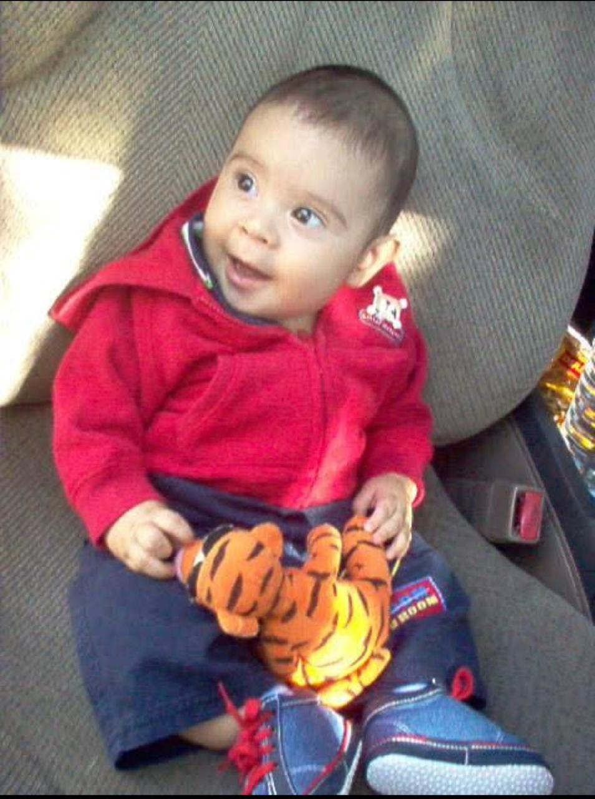

Sobre mi

Nací el 8 de diciembre del año 2005, actualmente tengo 19 años.
Crecí dentro de una familia bastante amorosa con mi padre y mi madre,
yo soy el hijo mayor y tengo 2 hermanos, una niña y un niño.
Hoy en día estudio en la Escuela Superior de Economía y Negocios
(ESEN) en la carrera de Ingeniería de Software y Negocios Digitales.
Mi pasión por la tecnología nace desde que estaba en bachillerato gracias
a mi profesor de informática, quien me empezó a introducir dentro de este mundo, por ello estoy
en esta carrera. También, me gusta hacer deporte, practiqué boxeo durante 2 años, ha
sido el único deporte que he practicado seriamente y me que me ha gustado. Disfruto mucho viendo
películas, algo de lo que más me gusta hacer en la vida, de vez en cuando leer libros, jugar
videojuegos y hacer entrenar en el gimnasio y algunos días salir a correr.
Trayectoria académica
Kinder Amiguitos 2009-2011

Estudié en el kínder amiguitos de los heroes, en San Salvador. Estuve
en esta institución desde los 4 años a los 6 años. No recuerdo mucho esta etapa
por la edad que tenía, pero me gustó mucho las actividades que se hacían y fue mi inicio
académico.
Colegio Anglo Americano 2012-2023

Después de terminar el kínder, mis padres tomaron la decisión de meterme en el Colegio Anglo
Americano
ubicado en San Salvador, en calle los Sisimiles. Empecé en primer grado y estuve allí el resto
de
mis
años
de estudio hasta bachillerato. En 2023 me gradué siendo top 3 en mi clase.
Escuela Superior de Economía y Negocios 2024-presente

Después de terminar mis estudios en el colegio, decidí meterme en la ESEN, en la carrera de
Ingeniería
de Software y Negocios Digitales. Actualmente estoy cursando mi segundo año de carrera, a punto
de
terminar el último ciclo. Espero poder graduarme en el 2028 de esta institución.
Habilidades e intereses
- Tecnológicas: Dominio en lenguajes de programación como Java, C#, Python, Javascript,
HTML, CSS, SQL, etc.
- Inglés: Sé hablar, escribir y comprender el inglés.
- Trabajo en equipo: Me gusta trabajar en equipo, ya que
me ha permitido aprender mucho de otros
- Inteligencia emocional: Controlo bien mis emociones, suelo autorregularme bien y mantenerme
en
calma.
Estoy interesado en aprender más sobre el mundo digital, sobre tecnología y sobre la
ingeniería de software. A su vez, en tener una trayectoria profesional exitosa y tener una
vida tranquila y cómoda.
Metas a futuro
Aspiro a lograr bastante en el futuro, entre algunas metas que quiero conseguir en este mundo
es tener un trabajo que disfrute y me brinde mucho valor económico y emocional. También,
seguir teniendo a mi familia junto a mí, seguir aprendiendo y mejorando en el mundo digital,
pero,
lo más importante, tener tranquilidad en mi vida.